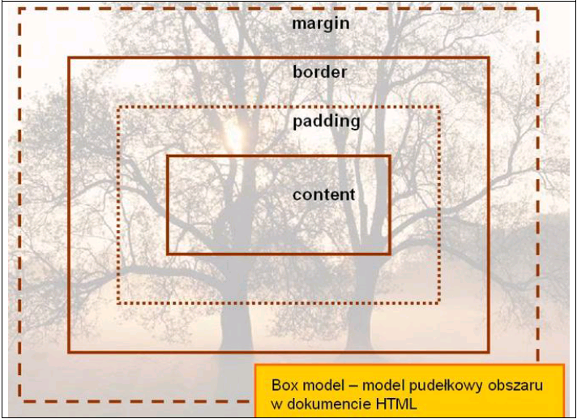
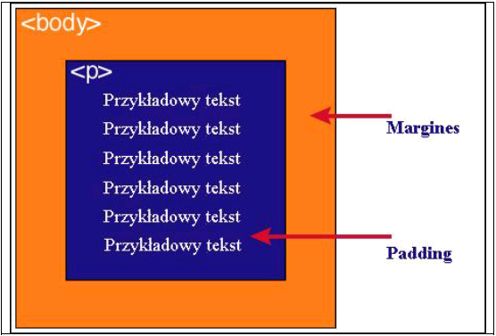

<html>
<head>
<META HTTP-EQUIV="content-type" CONTENT="text/html; charset="utf-8">
</head>
<body>
<h3>Definicja modelu pudełkowego</h3>
<p>Każdy element w dokumencie HTML, otacza się prostokątnym obszarem zwanym pudełkiem (ang. Box model). Pudełko składa się z kilku warstw:</p>
<table border=1px>
<tr>
<td>Zawartość</td> <td>Opis</td>
</tr>
<tr>
<td>content</td> <td>zawartość elementu (np.: tekst, obrazek)</td>
</tr>
<tr>
<td>padding</td> <td>otaczające marginesy wewnętrzne, odstęp między obramowaniem i zawartością elementu</td>
</tr>
<tr>
<td>border</td> <td>obramowania wokół zawartości elementu, ma styl i kolor.</td>
</tr>
<tr>
<td>margin</td> <td>marginesy wokół ramki (margines zewnętrzny). Jest to pusty obszar wokół ramki, który nie ma koloru tła i jest przeźroczysty.</td>
</tr>
</table>
<h3>Uwaga 1</h3>
<p>Padding, border i margin mogą mieć zerową wartość.</p>
<h3>Uwaga 2</h3>
<p>Tło elementu jest określone dla wszystkich z podanych powyżej obszarów z wyjątkiem marginesów zewnętrznych, które zawsze są przezroczyste (transparent).</p>
<h3>Obrazek modelu puełowego</h3>

<h3>Różnica między paddingiem a marginesem</h3><br>
<p>Padding określa przestrzeń wokół danego elementu, np: >p> lub >div>, natomiast margines przestrzeń pomiędzy elementami.</p><br>

<p>Jak widać na rysunku, padding oznaczony jest kolorem niebieskim. Określa on wielkość przestrzeni wokół elementu >p>. Element ten posiada również margines zaznaczony kolorem pomarańczowym. Jest to odległość od brzegu elementu >body>.</p>
</body>
</html>
<! Stormowski ->